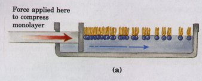
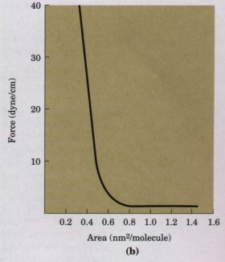
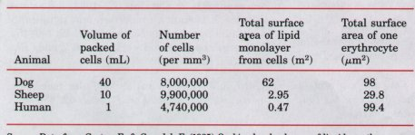
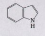

Biological membranes are central to life. They define cellular boundaries, divide cells into discrete compartments, organize complex reaction sequences, and act in signal reception and energy transformations. Membranes are composed of lipids and proteins in varying combinations that are specific to each species, cell type, and organelle. The fluid mosaic model describes certain features common to all biological membranes. The lipid bilayer is the basic structural unit. Fatty acyl chains of phospholipids and the steroid nucleus of sterols are oriented toward the interior of the bilayer; their hydrophobic interactions stabilize the bilayer but allow the structure to be flexible. Lipids and most proteins are free to diffuse laterally within the membrane, and the hydrophobic moieties of the lipids undergo rapid thermal motion, making the interior of the bilayer fluid. Fluidity is affected by temperature, fatty acid composition, and sterol content. Cells strive to maintain a constant fluidity when external circumstances change.
Peripheral membrane proteins are loosely associated with the membrane through electrostatic interactions and hydrogen bonds or by covalently attached lipid anchors. Integral membrane proteins associate with the lipid bilayer by hydrophobic interactions with their nonpolar amino acid side chains, which are oriented toward the outside of the protein molecule. Some membrane proteins span the lipid bilayer several times, with hydrophobic sequences of about 20 amino acids, each capable of forming a transmembrane a helix. Such hydrophobic sequences can be detected and used to predict the structure and transmembrane disposition of these proteins. The lipids and proteins of the membrane are inserted into the bilayer with specific sidedness; the membrane is structurally and functionally asymmetric. Many membrane proteins contain covalently attached polysaccharides of various degrees of complexity. Plasma membrane glycoproteins are always oriented with the carbohydrate-bearing domain on the extracellular surface. Annexins and fusion proteins mediate the fusion of two membranes, which accompanies processes such as endocytosis and exocytosis.
The lipid bilayer is impermeable to polar substances. Water is an important exception; it is able to diffuse passively across the bilayer. Other polar species cross biological membranes only by way of specific membrane proteins. Ion channels provide hydrophilic pores through which select ions can diffuse, moving down their electrical or chemical concentration gradients.
The movement of many ions and compounds across cellular membranes is catalyzed by specific transport proteins (transporters ), which, like enzymes, show saturation and substrate specificity. Transport via these systems may be passive (down the electrochemical gradient, hence independent of metabolic energy) such as glucose transport into erythrocytes, or active (against the gradient, and dependent on metabolic energy). The energy input for active transport may come from light, oxidation reactions, ATP hydrolysis, or cotransport of some other solute. Some transporters carry out symport, the simultaneous passage of two species in the same direction; others mediate antiport, in which two species move in opposite directions, but simultaneously. An example of antiport is the chloridebicarbonate exchanger of erythrocytes. In animal cells, the differences in cytosolic and extracellular concentrations of Na+ and K+ are established and maintained by active transport via the Na+ K+ ATPase, and the resulting Na+ gradient is used as an energy source by a variety of symport and antiport systems.
There are three general types of ion-pumping ATPases. P-type ATPases undergo reversible phosphorylation during their catalytic cycle, and are inhibited by the phosphate analog vanadate. V-type ATPases produce gradients of protons across the membranes of a variety of intracellular organelles, including plant vacuoles. F-type proton pumps (ATP synthases) are central to energyconserving mechanisms in mitochondria and chloroplasts. Ion-selective channels such as the acetylcholine receptor act in the passage of electrical signals in neurons, muscle cells, and other cells sensitive to a variety of stimuli.
3rd edn, Blackwell Scientific Publications, Oxford. Finean, J.B., Coleman, R., & Mitchell, R.H. An introductory text on membrane composition, (1984) Membranes and Their Cellular Functions, structure, and function.
Harold, F.M. (1986) The Vital Force: A Study of Bioenergetics, W.H. Freeman and Company, New York.
Chapters 9 and 10 of this excellent book concern the energetics and mechanisms of transport, and Chapter 4 is a discussion of the energy of ion gradients.
Jain, M.K. (1988) Introduction to Biological Membranes, 2nd edn, John Wiley & Sons, Inc., New York.
A textbook of membranology, longer and more aduanced than Finean et al.
Martonosi, A.N. (ed) (1985) The Enzymes of Biological Membranes, 2nd edn, Plenum Press, New York.
This four-uolume set has 61 indiuidual reuiews couering many of the topics in this chapter, including the electron microscopy of membranes, proteinlipid interactions in membranes, the energetics of actiue transport, and the Na+K+ ATPase.
Stein, W.D. (1986) Transport and Diffusion Across Cell Membranes, Academic Press, Inc., New York. This excellent textbook on biological transport couers all the transport systems described in this chapter, at a more aduanced Leuel.
Tanford, C. (1980) The Hydrophobic Effect: Formation of Micelles and Biological Membranes, 2nd edn, John Wiley & Sons, Inc., New York.
A description of the forces that stabilize micelles, bilayers, and membranes, in rigorous physicalchemical terms.
Molecular Constituents of Membrc~nes Bretscher, M.S. (1985) The molecules of the cell membrane. Sci. Am. 253 (October), 100-109. Supramolecular Architecture of Membranes Fasman, G.D. & Gilbert, W.A. (1990) The prediction of transmembrane protein sequences and their conformation: an evaluation. Trends Biochem. Sci. 15, 89-92.
Short but clear suruey of seueral methods of predicting transmembrane helices from sequence (hydropathy plots).
McIlhinney, R.A.J. (1990) The fats of life: the importance and function of protein acylation. Trends Biochem. Sci. 15, 387-391.
A short but good summary of the kinds of proteins that contain coualently bound lipid, and the functional significance of lipid attachment.
Rothman, J.E. & Lenard, J. (1977) Membrane asymmetry. Science 195, 743-753.
Excellent summary of the experimental evidence that both lipids and proteins of membranes are asymmetrically disposed in the bilayer.
Singer, S.J. & Nicolson, G.L. (1972) The fluid mosaic model of the structure of cell membranes. Science 175, 720-731.
The classic statement of the model.
Unwin, N. & Henderson, R. (1984) The structure of proteins in biological membranes. Sci. Am. 250 (February), 78-94.
Describes the technical problems and solutions in determining the structure of integral membrane proteins, with emphasis on bacteriorhodopsin. Solute Transport across Membranes
Forgac, M. (1989) Structure and function of vacuolar class of ATP-driven proton pumps. Physiol. Rev. 69, 765-796.
Hille, B. (1988) Ionic channels: molecular pores of excitable membranes. Harvey Lect. 82, 47-69. Jennings, M.L. (1989) Structure and function of the red blood cell anion transport protein. Annu. Rev. Biophys. Biophys. Chem. 18, 397-430. Detailed, advanced treatment of this transporter. Kaback, H.R. (1989) Molecular biology of active transport: from membrane to molecule to mechanism. Haruey Lect. 83, 77-105.
Description of the galactoside permease of E. coli. Lienhard, F.E., Slot, J.W., James, D.E., & Mueckler, M.M. (1992) How cells absorb glucose. Sci. Am. 266 (January), 86-91.
Introductory leuel description of the glucose transporter and its regulation by insulin.
Lodish, H.F. (1988) Anion-exchange and glucose transport proteins: structure, function and distribution. Haruey Lect. 82, 19-46.
Numa, S. (1989) A molecular view of neurotransmitter receptors and ionic channels. Haruey Lect. 83, 121-165.
Pedersen, P.L. & Carafoli, E. (1987) Ion motive ATPases. I. Ubiquity, properties, and significance to cell function. Trends Biochem. Sci. 12, 146-150. II. Energy coupling and work output. Trends Biochem. Sci. 12, 186-189.
White, J.M. (1990) Viral and cellular membrane fusion proteins. Annu. Rev. Physiol. 52, 675-697.
1. Determining the Cross-Sectional Area of a Lipid Molecule When phospholipids are layered gently onto the surface of water, they orient at the airwater interface with their head groups in the water and their hydrophobic tails in the air. The experimental apparatus pictured below (a) pushes these lipids together by reducing the surface area available to them. By measuring the force necessary to push the lipids together, it is possible to determine when the molecules are packed tightly together in a continuous monolayer; when that area is approached, the pressure needed to further reduce the surface area increases sharply (b). How would you use such an experimental apparatus to determine the average area occupied by a single lipid molecule in a lipid monolayer?


2. Euidence for Lipid Bilayer In 1925, E. Gorter and F. Grendel used an apparatus like that described in Problem 1 to determine the surface area of a lipid monolayer formed by lipids extracted from erythrocytes of several animal species. They used a microscope to measure the dimensions of individual cells, from which they calculated the average surface area of one erythrocyte. They obtained the data shown below. Were these investigators justified in concluding that "chromocytes [erythrocytes] are covered by a layer of fatty substances that is two molecules thick" (i.e., a lipid bilayer)?

3. Length of a Fatty Acid Molecule The carboncarbon bond distance for single-bonded carbons such as those in a saturated fatty acyl chain is about 0.15 nm. Estimate the length of a single molecule of palmitic acid in its fully extended form. If two molecules of palmitic acid were laid end to end, how would their total length compare with the thickness of the lipid bilayer in a biological membrane?
4. Temperature Dependence of Lateral Diffusion The experiment described in Figure 10-12 was done at 37 °C. If, instead, the whole experiment were carried out at 10 °C, what efiect would you predict on the rate of cell-cell fusion, and the rate of membrane protein mixing? Why?
5. Synthesis of Gastric Juice: Energetics Gastric juice (pH 1.5) is produced by pumping HCl from blood plasma (pH 7.4) into the stomach. Calculate the amount of free energy required to concentrate the H+ in 1 L of gastric juice at 37°C. Under cellular conditions, how many moles of ATP must be hydrolyzed to provide this amount of free energy? (The free-energy change for ATP hydrolysis under cellular conditions is about -58 kJ/mol, as we will explain in Chapter 13.)
6. Energetics of the Na+K+ ATPase The concentration of Na+ inside a vertebrate cell is about 12 mM, and the cell is bathed in blood plasma containing about 145 mM Na+. For a typical cell with a transmembrane potential of -0.07 V (inside negative relative to outside), what is the free-energy change for transporting 1 mol of Na+ out of the cell at 37 °C
7. Action of Ouabain on Kidney Tissue Ouabain specifically inhibits the Na+K+ ATPase activity of animal tissues but is not known to inhibit any other enzyme. When ouabain is added in graded concentrations to thin slices of living kidney tissue, it inhibits oxygen consumption by 66%. Explain the basis of this observation. What does it tell us about the use of respiratory energy by kidney tissue?
8. Membrane Protein Topology The receptor for the hormone epinephrine in animal cells is an integral membrane protein (Mr 64,000) that is believed to span the membrane seven times. Show that a protein of this size is capable of spanning the membrane seven times. If you were given the amino acid sequence of this protein, how would you go about predicting which regions of the protein form the membrane-spanning helices?
9. Energetics of Symport Suppose that you determined experimentally that a cellular transport system for glucose, driven by symport of Na+, could accumulated glucose to concentrations 25 times greater than in the external medium, while the external [Na+J] was only ten times greater than the intracellular [Na+]. Is this a violation of the laws of thermodynamics? If not, how do you explain this observation?
10. Location of a Membrane Protein An unknown membrane protein, X, can be extracted from disrupted erythrocyte membranes into a concentrated salt solution. Isolated X can be cleaved into fragments by proteolytic enzymes. But treatment of erythrocytes, first with proteolytic enzymes, followed by disruption and extraction of membrane components, yields intact X. In contrast, treatment of erythrocyte "ghosts" (which consist of only membranes, produced by disrupting the cells and wash
ing out the hemoglobin) with proteolytic enzymes, followed by disruption and extraction, yields extensively fragmented X. What do these experiments indicate about the location of X in the plasma membrane? On the basis of this information, do the properties of X resemble those of glycophorin or those of ankyrin?
11. Membrane Self Sealing Cell membranes are self sealing-if they are punctured or disrupted mechanically, they quickly and automatically reseal. What properties of membranes are responsible for this important feature?
12. Lipid Melting Temperatures Membrane lipids in tissue samples obtained from different parts of the leg of a reindeer show different fatty acid compositions. Membrane lipids from tissue near the hooves contain a larger proportion of unsaturated fatty acids than lipids from tissue in the upper part of the leg. What is the significance of this observation?
13. Flip-Flop Diffusion The inner face of the human erythrocyte membrane consists predominantly of phosphatidylethanolamine and phosphatidylserine. The outer face consists predominantly of phosphatidylcholine and sphingomyelin. Although the phospholipid components of the membrane can diffuse in the fluid bilayer, this sidedness is preserved all all times. How?
14. Membrane Permeability At pH 7, tryptophan crosses a lipid bilayer membrane about 1,000 times more slowly than does the closely related substance indole:

Suggest an explanation for this observation.